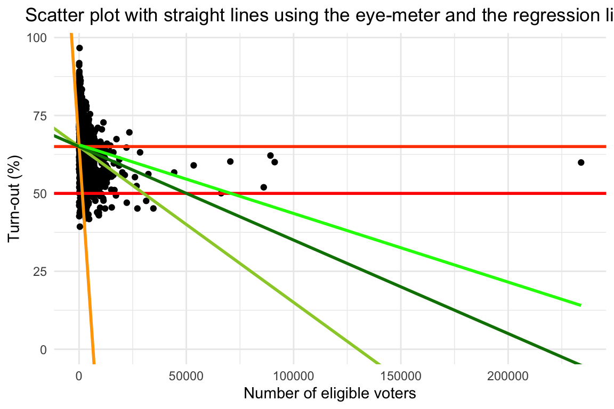
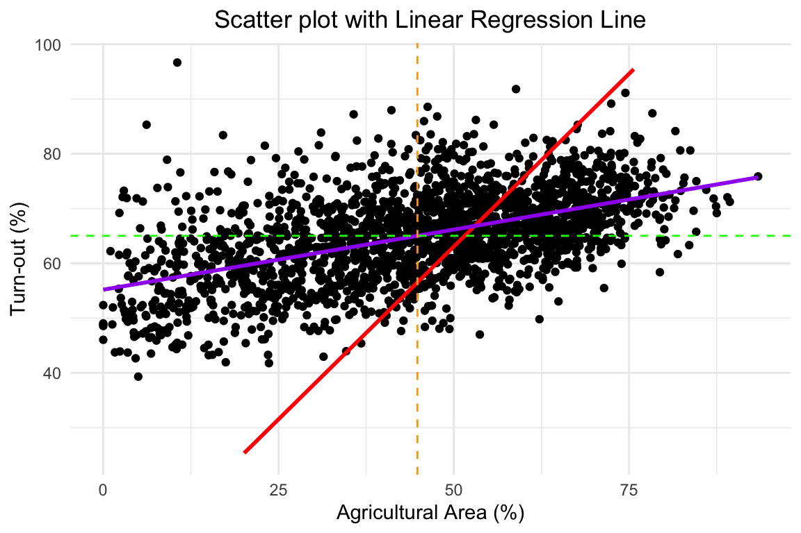
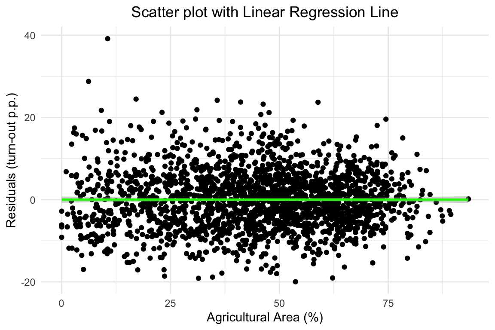
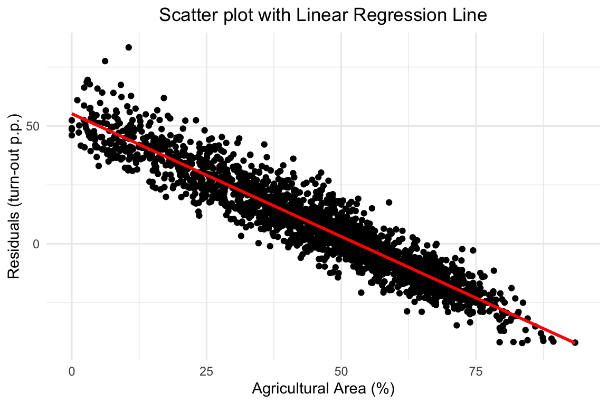
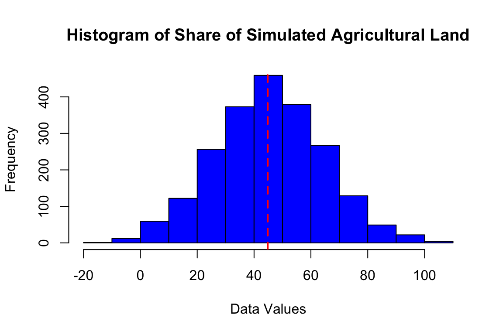
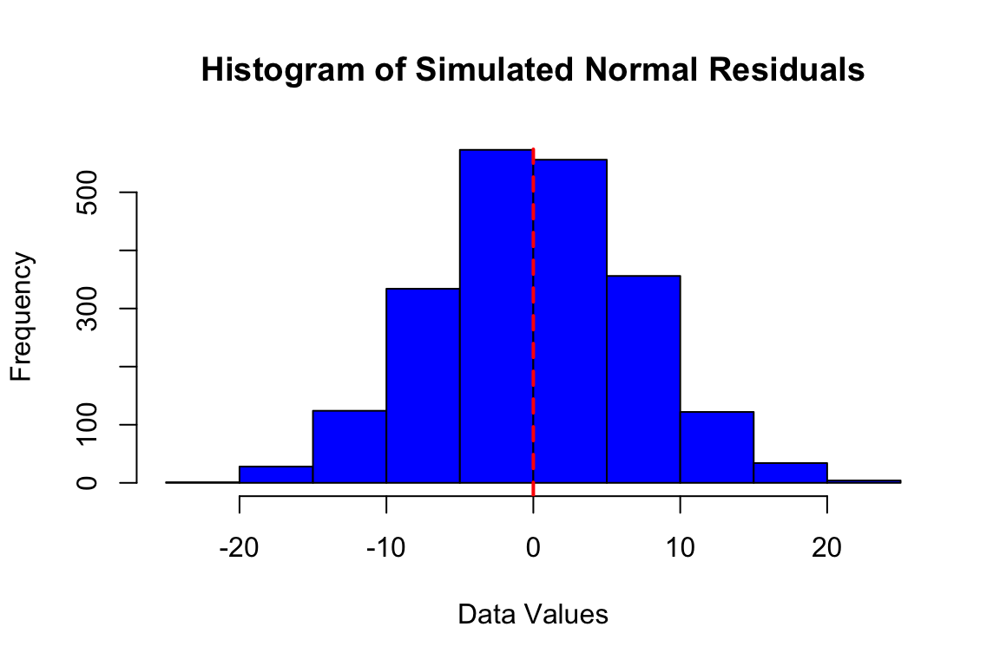

Chapter 3 Week 3: Regression I (Prediction)
3.1 Aims
- Using regression analysis for quantitative descriptive purposes with real data
- Using simulation to instantiate how different properties of the data generating process alter the reliability of regression analysis
3.2 Exercise: Context and Question
As developed in the following entry, a referendum took place in 2021 to assess whether Swiss citizens approved or not a bill aimed at reducing greenhouse gas emissions.
The bill was rejected by a narrow margin: 51.6% of votes went for the “No”, while 48.4% for the “Yes”. In the media, some analysts commented that a marked division or cleavage between rural and urban voters seems to have led to this result. According to their narrative, a specially high rural turn-out seems to underlie such result. As the analyst commented, most urban inhabitants liked the bill while most rural inhabitants disliked it.
Not satisfied with a simple impression, as a political scientist you want to quantitatively qualify your understanding about what happened in that election. Particularly, you want to know:
- Given that more rural municipalities have smaller populations, was the turn-out higher in municipalities with smaller populations than in bigger ones?
- Was the turn-out higher in more agricultural municipalities than in less agricultural ones?
Thus, to analytically describe the voting results, you will perform some regressions using the following data.
3.3 Exercise: solution
Note: Remember that you can copy the code from one point to answer another point. Simply make the necessary adjustments.
3.3.1 Real data
Open the file CO2_land.csv.
Note: in the Appendix you can find how to get the data using APIs of the Swiss Federal Statistical Office.
Using such a file, you embark in doing the following to answer your two questions:
- Since you want to describe the turn-out across municipalities with different population sizes, you initially think of regressing the turn-out on the population size. As you lack the municipal population, you use the number of eligible voters
anzahlStimmberechtigteas a proxy. To have a preliminary notion on the relation betweenstimmbeteiligungInProzent(Turn-out in percent) onanzahlStimmberechtigte(number of eligible voters), generate a scatter plot and add as many straight lines as you want to visually guess which one would be the one that goes closest to each data point. This entry could be of help. Remember that a straight line is defined in therms of its slope and intercept parameters. Begin with a slope of zero and an intercept equal to 50. Then, change only one parameter at a time.
guess_int_1= 50
guess_slope_1= 0
guess_int_2= mean(CO2_land$stimmbeteiligungInProzent, na.rm = TRUE)
guess_slope_3=-0.01
guess_slope_4=-0.0005
guess_slope_5=-0.0003
ggplot(CO2_land, aes(x = anzahlStimmberechtigte, y = stimmbeteiligungInProzent)) +
geom_point() +
geom_abline(intercept = guess_int_1,
slope = guess_slope_1, color = "#FF0000", size = 1) + #first guess
geom_abline(intercept = guess_int_2,
slope = guess_slope_1, color = "#FF4500", size = 1) + #a good guess, only changing intercept
geom_abline(intercept = guess_int_2,
slope = guess_slope_3, color = "#FFA500", size = 1) + #decreasing the slope, keeping the intercept
geom_abline(intercept = guess_int_2,
slope = guess_slope_4, color = "#9ACD32", size = 1) + #decreasing the slope, keeping the intercept
geom_abline(intercept = guess_int_2,
slope = guess_slope_5, color = "#008000", size = 1) + #best visual guess
scale_y_continuous(limits = c(0, max(CO2_land$stimmbeteiligungInProzent, na.rm = TRUE))) +
theme_minimal() +
theme(plot.title = element_text(hjust = 0.5)) +
labs(
x = "Number of eligible voters",
y = "Turn-out (%)",
title = "Scatter plot with straight lines using the eye-meter"
)
- Add to the previous graph the linear regression line.
ggplot(CO2_land, aes(x = anzahlStimmberechtigte, y = stimmbeteiligungInProzent)) +
geom_point() +
geom_abline(intercept = guess_int_1,
slope = guess_slope_1, color = "#FF0000", size = 1) + #first guess
geom_abline(intercept = guess_int_2,
slope = guess_slope_1, color = "#FF4500", size = 1) + #a good guess, only changing intercept
geom_abline(intercept = guess_int_2,
slope = guess_slope_3, color = "#FFA500", size = 1) + #decreasing the slope, keeping the intercept
geom_abline(intercept = guess_int_2,
slope = guess_slope_4, color = "#9ACD32", size = 1) + #decreasing the slope, keeping the intercept
geom_abline(intercept = guess_int_2,
slope = guess_slope_5, color = "#008000", size = 1) + #best visual guess
geom_smooth(method = "lm", formula = y ~ x, se = FALSE, color = "green") + #mathematically estimated best possible parameters
scale_y_continuous(limits = c(0, max(CO2_land$stimmbeteiligungInProzent, na.rm = TRUE))) +
theme_minimal() +
theme(plot.title = element_text(hjust = 0.5)) +
labs(
x = "Number of eligible voters",
y = "Turn-out (%)",
title = "Scatter plot with straight lines using the eye-meter and the regression line"
)
- You have now instantiated the intuition behind the linear regression by forming different lines that are visually intuitive about the relation between our variables of interest. Since you know that the linear regression line is the straight line that is closest to all points, you want to go beyond your “eye-meter” and use a precise measurement. Regress
stimmbeteiligungInProzentonanzahlStimmberechtigte. Report and interpret the parameters.
Write the regression here.
result1 <- lm(stimmbeteiligungInProzent ~ anzahlStimmberechtigte , data = CO2_land)
summary(result1)##
## Call:
## lm(formula = stimmbeteiligungInProzent ~ anzahlStimmberechtigte,
## data = CO2_land)
##
## Residuals:
## Min 1Q Median 3Q Max
## -26.173 -5.185 0.244 5.365 45.871
##
## Coefficients:
## Estimate Std. Error t value Pr(>|t|)
## (Intercept) 6.558e+01 1.832e-01 358.048 <2e-16 ***
## anzahlStimmberechtigte -2.202e-04 2.408e-05 -9.146 <2e-16 ***
## ---
## Signif. codes: 0 '***' 0.001 '**' 0.01 '*' 0.05 '.' 0.1 ' ' 1
##
## Residual standard error: 7.98 on 2130 degrees of freedom
## Multiple R-squared: 0.03779, Adjusted R-squared: 0.03734
## F-statistic: 83.65 on 1 and 2130 DF, p-value: < 2.2e-16Report and interpret the parameters here:
## (Intercept) anzahlStimmberechtigte
## 65.5802858731 -0.0002202479The estimated (Intercept) is 65.58, while the estimated slope for anzahlStimmberechtigte is -2.2^{-4}. It means that, across Swiss municipalities, an increase of a thousand voters was associated with an average decrease in the turn-out of -0.22 percentage points.
- Since you don’t want to take for granted that the mathematically estimated parameters are the ones that generate the best possible fit for a straight line, you want to compare the Sum of Squared Residuals (SSR) across the lines that you generated in the previous point. Generate and compare the SSR for each of those lines. Are the parameters estimated by R the best among your estimations?
# It's easier to calculate the residuals simply using the model
CO2_land$ResidRegression<- residuals(result1)
CO2_land$SqResidRegression<- (residuals(result1))^2
CO2_land$SumSqResidRegression<- sum(CO2_land$SqResidRegression)
#But it's also possible to easily calculate the squared residuals (SR) for each model
CO2_land$SR_Guess1= ((guess_int_1 + guess_slope_1 * CO2_land$anzahlStimmberechtigte)-CO2_land$stimmbeteiligungInProzent)^2
CO2_land$SR_Guess2= ((guess_int_2 + guess_slope_1 * CO2_land$anzahlStimmberechtigte)-CO2_land$stimmbeteiligungInProzent)^2
CO2_land$SR_Guess3= ((guess_int_1 + guess_slope_3 * CO2_land$anzahlStimmberechtigte)-CO2_land$stimmbeteiligungInProzent)^2
CO2_land$SR_Guess4= ((guess_int_1 + guess_slope_4 * CO2_land$anzahlStimmberechtigte)-CO2_land$stimmbeteiligungInProzent)^2
CO2_land$SR_Guess5= ((guess_int_1 + guess_slope_5 * CO2_land$anzahlStimmberechtigte)-CO2_land$stimmbeteiligungInProzent)^2
# And sum of squared residuals (SSR)
CO2_land$SSR_Guess1= sum(CO2_land$SR_Guess1)
CO2_land$SSR_Guess2= sum(CO2_land$SR_Guess2)
CO2_land$SSR_Guess3= sum(CO2_land$SR_Guess3)
CO2_land$SSR_Guess4= sum(CO2_land$SR_Guess4)
CO2_land$SSR_Guess5= sum(CO2_land$SR_Guess5)
if ((CO2_land$SumSqResidRegression[1]<CO2_land$SSR_Guess1[1]) & (CO2_land$SumSqResidRegression[1]<CO2_land$SSR_Guess2[1]) & (CO2_land$SumSqResidRegression[1]<CO2_land$SSR_Guess3[1]) & (CO2_land$SumSqResidRegression[1]<CO2_land$SSR_Guess4[1]) & (CO2_land$SumSqResidRegression[1]<CO2_land$SSR_Guess5[1])){
print("Yes, as it is mathematically necessary, the SSR for the mathematically estimated model is the lowest across all estimated scenarios! :)")
}## [1] "Yes, as it is mathematically necessary, the SSR for the mathematically estimated model is the lowest across all estimated scenarios! :)"- Notice that some few municipalities have numbers of voters that are very high compared to the typical values. As a consequence, the regression line is very influenced by those observations (i.e., small displacements in the area where there are many observations have a lower influence on the line than displacements of the same magnitude and direction in the area with few observations). As a consequence, you want to analyze how do the previous estimates change when you restrict your analysis to municipalities with less than 50K eligible voters. Estimate the regression and compare the respective parameters of the models. What slope is higher? What intercept is higher? How does obviating those observations influence our parameters?
CO2_land_filtered <- CO2_land %>%
filter(anzahlStimmberechtigte < 50000)
result2 <- lm(stimmbeteiligungInProzent ~ anzahlStimmberechtigte , data = CO2_land_filtered)
summary(result2)##
## Call:
## lm(formula = stimmbeteiligungInProzent ~ anzahlStimmberechtigte,
## data = CO2_land_filtered)
##
## Residuals:
## Min 1Q Median 3Q Max
## -27.3197 -4.6709 0.2374 4.9221 29.8830
##
## Coefficients:
## Estimate Std. Error t value Pr(>|t|)
## (Intercept) 6.698e+01 1.997e-01 335.3 <2e-16 ***
## anzahlStimmberechtigte -8.762e-04 5.093e-05 -17.2 <2e-16 ***
## ---
## Signif. codes: 0 '***' 0.001 '**' 0.01 '*' 0.05 '.' 0.1 ' ' 1
##
## Residual standard error: 7.62 on 2123 degrees of freedom
## Multiple R-squared: 0.1224, Adjusted R-squared: 0.122
## F-statistic: 296 on 1 and 2123 DF, p-value: < 2.2e-16## (Intercept) anzahlStimmberechtigte
## 66.9791169423 -0.0008762278if ((coeffs1[1]>coeffs2[1]) & (coeffs1[1]!=coeffs2[1])){
print("The original model has a higher intercept than the one only on the restricted observations.")
} else{
print("The model only on the restricted observations has a higher intercept than the original one.")
}## [1] "The model only on the restricted observations has a higher intercept than the original one."if ((coeffs1[2]>coeffs2[2]) & (coeffs1[2]!=coeffs2[2])){
print("The original model has a higher slope than the one only on the restricted observations.")
} else{
print("The model only on the restricted observations has a higher slope than the original one.")
}## [1] "The original model has a higher slope than the one only on the restricted observations."The reason the parameters changed is because the new model needs to fit data that is concentrated in a more clearly negative relation between our variables of interest.
[Optional] Modify slightly the parameters estimated using the linear regression. For example, keeping the intercept unchanged, increase or decrease the slope in 1 percent every time. Now, compare the sum of squared residuals. Do your experiments show smaller SSR? Is it possible?
Finally, you want to analyze a counterfactual scenario: What would have been the outcome of the referendum should the turn-out in each of the municipalities would have been as high as in Zurich?
OriginalOutcome = sum(CO2_land$jaStimmenAbsolut)/(sum(CO2_land$jaStimmenAbsolut)+sum(CO2_land$neinStimmenAbsolut))
CO2_land$Valid_TurnOut =CO2_land$gueltigeStimmen/CO2_land$anzahlStimmberechtigte
CO2_land$OriginalOutcome_test = CO2_land$jaStimmenInProzent * CO2_land$anzahlStimmberechtigte * CO2_land$Valid_TurnOut /100
# Min
TurnOut_min= min(CO2_land$Valid_TurnOut)
CO2_land$Yes_Conterfactual_min= CO2_land$jaStimmenInProzent * CO2_land$anzahlStimmberechtigte * TurnOut_min /100
CO2_land$No_Conterfactual_min= (100-CO2_land$jaStimmenInProzent) * CO2_land$anzahlStimmberechtigte * TurnOut_min /100
CounterfactualOutcome_min= sum(CO2_land$Yes_Conterfactual_min)/(sum(CO2_land$Yes_Conterfactual_min)+sum(CO2_land$No_Conterfactual_min))
# Max
TurnOut_max= max(CO2_land$Valid_TurnOut)
CO2_land$Yes_Conterfactual_max= CO2_land$jaStimmenInProzent * CO2_land$anzahlStimmberechtigte * TurnOut_max
CO2_land$No_Conterfactual_max= (100-CO2_land$jaStimmenInProzent) * CO2_land$anzahlStimmberechtigte * TurnOut_max
CounterfactualOutcome_max= sum(CO2_land$Yes_Conterfactual_max)/(sum(CO2_land$Yes_Conterfactual_max)+sum(CO2_land$No_Conterfactual_max))
# Zurich
TurnOut_Zurich= CO2_land$Valid_TurnOut[CO2_land$mun_id==261]
CO2_land$Yes_Conterfactual_Zurich= CO2_land$jaStimmenInProzent * CO2_land$anzahlStimmberechtigte * TurnOut_Zurich
CO2_land$No_Conterfactual_Zurich= (100-CO2_land$jaStimmenInProzent) * CO2_land$anzahlStimmberechtigte * TurnOut_Zurich
CounterfactualOutcome_Zurich= sum(CO2_land$Yes_Conterfactual_Zurich)/(sum(CO2_land$Yes_Conterfactual_Zurich)+sum(CO2_land$No_Conterfactual_Zurich))
# Luzern
TurnOut_Luzern= CO2_land$Valid_TurnOut[CO2_land$mun_id==1061]
CO2_land$Yes_Conterfactual_Luzern= CO2_land$jaStimmenInProzent * CO2_land$anzahlStimmberechtigte * TurnOut_Luzern
CO2_land$No_Conterfactual_Luzern= (100-CO2_land$jaStimmenInProzent) * CO2_land$anzahlStimmberechtigte * TurnOut_Luzern
CounterfactualOutcome_Luzern= sum(CO2_land$Yes_Conterfactual_Luzern)/(sum(CO2_land$Yes_Conterfactual_Luzern)+sum(CO2_land$No_Conterfactual_Luzern))
cat('The original percentage for Yes was:', OriginalOutcome,
"\nThe counterfactual using the minimum turnout would have been: ", CounterfactualOutcome_min,
"\nThe counterfactual using the maximum turnout would have been: ", CounterfactualOutcome_max,
"\nThe counterfactual using Zurich\'s turnout would have been: ", CounterfactualOutcome_Zurich,
"\nThe counterfactual using Luzern\'s turnout would have been: ", CounterfactualOutcome_Luzern)## The original percentage for Yes was: 0.4812683
## The counterfactual using the minimum turnout would have been: 0.4854131
## The counterfactual using the maximum turnout would have been: 0.4854131
## The counterfactual using Zurich's turnout would have been: 0.4854131
## The counterfactual using Luzern's turnout would have been: 0.4854131if ((CounterfactualOutcome_min >.5) | (CounterfactualOutcome_max >.5) | (CounterfactualOutcome_Zurich >.5) | (CounterfactualOutcome_Luzern >.5)){
print('There is at least one counterfactual where the outcome changes')
}else{
print('There is no counterfactual where the outcome changes')
}## [1] "There is no counterfactual where the outcome changes"- Given your preliminary analysis, you find that, on average, municipalities with bigger populations had a lower turn-out than those with smaller ones. To bring some more nuance to your analysis and capture how rural a municipality is, you use the agricultural area of the municipality (
AgriculturalAreaHa) as a regressor (aka. independent variable) for the same regressand (aka. dependent variable) of the previous point (i.e., Turn-out in percent). Report and interpret the parameter. Also present the corresponding graph.
Write the regression here.
##
## Call:
## lm(formula = stimmbeteiligungInProzent ~ AgriculturalAreaHa,
## data = CO2_land)
##
## Residuals:
## Min 1Q Median 3Q Max
## -25.189 -5.328 0.202 5.545 31.679
##
## Coefficients:
## Estimate Std. Error t value Pr(>|t|)
## (Intercept) 6.445e+01 2.128e-01 302.902 < 2e-16 ***
## AgriculturalAreaHa 8.477e-04 1.772e-04 4.784 1.84e-06 ***
## ---
## Signif. codes: 0 '***' 0.001 '**' 0.01 '*' 0.05 '.' 0.1 ' ' 1
##
## Residual standard error: 8.092 on 2130 degrees of freedom
## Multiple R-squared: 0.01063, Adjusted R-squared: 0.01016
## F-statistic: 22.88 on 1 and 2130 DF, p-value: 1.84e-06Report and interpret the parameter here.
## (Intercept) AgriculturalAreaHa
## 6.444848e+01 8.476927e-04The estimated (Intercept) is 64.45, while the estimated slope for AgriculturalAreaHa is 0. It means that, across Swiss municipalities, an increase of a thousand voters was associated with an average decrease in the turn-out of 0.85 percentage points.
Present the graph here.
# Create a scatter plot
ggplot(CO2_land, aes(x = AgriculturalAreaHa, y = stimmbeteiligungInProzent)) +
geom_point() +
geom_smooth(method = "lm", formula = y ~ x , se = FALSE, color = "purple") + # Adding the regression line
theme_minimal() +
theme(plot.title = element_text(hjust = 0.5)) +
labs(
x = "Agricultural Area (Ha)",
y = "Turn-out (%)",
title = "Scatter plot with Linear Regression Line"
)
- The result from the previous point is consistent with the result of the vote given the urban-rural divide in preferences (i.e., municipalities with more agricultural area had higher participation rates). However, you notice that your comparisons across municipalities are not very rigorous because you are ignoring how important agricultural land is with respect to the whole municipality area. An implication of that is that two municipalities with the same agricultural area could be taken as equally rural while one could have a very big urban area (e.g., Zurich) and the other have a very small one.
Thus to make your analysis across more comparable units, you transform the absolute value of the agricultural area to a relative one: the percentage of the municipal area that is agricultural. Create the variable AgricAreaPercent to represent those transformed values. Regress the turn-out on the newly created variable. Again, do the regression without intercept. Report and interpret the parameter. Also present the corresponding graph.
Write the regression here.
#Transform the units to make them comparable
CO2_land <- CO2_land %>%
mutate(AgricAreaPercent= 100*AgriculturalAreaHa/TotalAreaHa)
#regression
result0 <- lm(stimmbeteiligungInProzent ~ AgricAreaPercent , data = CO2_land)
summary(result0)##
## Call:
## lm(formula = stimmbeteiligungInProzent ~ AgricAreaPercent, data = CO2_land)
##
## Residuals:
## Min 1Q Median 3Q Max
## -19.971 -4.760 -0.270 4.314 39.145
##
## Coefficients:
## Estimate Std. Error t value Pr(>|t|)
## (Intercept) 55.189867 0.384603 143.5 <2e-16 ***
## AgricAreaPercent 0.219491 0.007894 27.8 <2e-16 ***
## ---
## Signif. codes: 0 '***' 0.001 '**' 0.01 '*' 0.05 '.' 0.1 ' ' 1
##
## Residual standard error: 6.969 on 2130 degrees of freedom
## Multiple R-squared: 0.2663, Adjusted R-squared: 0.2659
## F-statistic: 773.1 on 1 and 2130 DF, p-value: < 2.2e-16Report and interpret the parameter here.
## (Intercept) AgricAreaPercent
## 55.189867 0.219491The estimated (Intercept) is 55.19, while the estimated slope for AgricAreaPercent is 0.22. It means that, across Swiss municipalities an increase of one percentage point in the share of agricultural land was associated with an average increase in the turn-out of 0.22 percentage points.
Present the graph here.
# Create a scatter plot
ggplot(CO2_land, aes(x = AgricAreaPercent, y = stimmbeteiligungInProzent)) +
geom_point() +
geom_smooth(method = "lm", formula = y ~ x, se = FALSE, color = "purple") + # Adding the regression line
theme_minimal() +
theme(plot.title = element_text(hjust = 0.5)) +
labs(
x = "Agricultural Area (%)",
y = "Turn-out (%)",
title = "Scatter plot with Linear Regression Line"
)
- [Optional] While analyzing your results, you asked yourself: what would have happened with my regression if it is estimated without an intercept? In particular, you asked yourself: does the the distance from each data point to the regression line decrease when an intercept is used? See this entry, particularly the graph with the blue and red squares to understand the logic of the R^2 as a measure for goodness of fit. You want to compare both the regression lines with and without the intercept in one same graph. Do it. What lesson can you get from this comparison?
ggplot(CO2_land, aes(x = AgricAreaPercent, y = stimmbeteiligungInProzent)) +
geom_point() +
geom_smooth(method = "lm", formula = y ~ x-1, se = FALSE, color = "red") + # Adding the regression line
geom_smooth(method = "lm", formula = y ~ x, se = FALSE, color = "purple") + # Adding the regression line
scale_y_continuous(limits = c(25, max(CO2_land$stimmbeteiligungInProzent, na.rm = TRUE))) + #
theme_minimal() +
theme(plot.title = element_text(hjust = 0.5)) +
labs(
x = "Agricultural Area (%)",
y = "Turn-out (%)",
title = "Scatter plot with Linear Regression Line"
)The lesson is that using the intercept is always desirable as it can potentially improve the goodness of fit, while doesn’t worsen it (i.e., the optimal intercept could be estimated to be zero). As it is clear from the graph, not using the intercept provides less reliable predictions and general descriptions for the relation between our variables of interest.
- [Optional] Now add a vertical line with the average for the agricultural area, and a horizontal one with the average turn-out. What does this new graph tell you about the descriptive performance of a regression with and without intercepts?
#Means for Y and X
mean_AgricAreaPercent <- mean(CO2_land$AgricAreaPercent, na.rm = TRUE)
mean_stimmbeteiligungInProzent <- mean(CO2_land$stimmbeteiligungInProzent, na.rm = TRUE)
# Create a scatter plot
ggplot(CO2_land, aes(x = AgricAreaPercent, y = stimmbeteiligungInProzent)) +
geom_point() +
geom_smooth(method = "lm", formula = y ~ x - 1, se = FALSE, color = "red") + # Adding the regression line
geom_smooth(method = "lm", formula = y ~ x, se = FALSE, color = "purple") + # Adding the regression line
geom_hline(yintercept = mean_stimmbeteiligungInProzent, linetype = "dashed", color = "green") + # Horizontal line at the mean of y
geom_vline(xintercept = mean_AgricAreaPercent, linetype = "dashed", color = "orange") + # Vertical line at the mean of x
scale_y_continuous(limits = c(25, max(CO2_land$stimmbeteiligungInProzent, na.rm = TRUE))) + #
theme_minimal() +
theme(plot.title = element_text(hjust = 0.5)) +
labs(
x = "Agricultural Area (%)",
y = "Turn-out (%)",
title = "Scatter plot with Linear Regression Line"
) The descriptive performance of a regression with an intercept is better than without it. As the graph shows, the vertical and horizontal lines for the averages of the dependent and independent variables overlap with each other in exactly the same place where the regression line with intercept goes through. This shows the capability of single linear regression to capture central tendency of the fitted data. On the contrary, the regression without intercept does not do that. Once again, this shows how the descriptive performance of a regression with intercept captures more intuitively the general relation between one variable and another.
- Store the residuals as
residuals. Plot the share of agricultural area against the residuals. What does it tell you regarding the ability of the model to describe the central tendency of the relationship across all values of the agricultural land share?
residuals0 <- residuals(result0)
ggplot(CO2_land, aes(x = AgricAreaPercent, y = residuals0)) +
geom_point() +
geom_smooth(method = "lm", formula = y ~ x , se = TRUE, color = "green")+ # Adding the
theme_minimal() +
theme(plot.title = element_text(hjust = 0.5)) +
labs(
x = "Agricultural Area (%)",
y = "Residuals (turn-out p.p.)",
title = "Scatter plot with Linear Regression Line"
) The existence of a horizontal slope between the residuals (i.e., the distance between the prediction and the real value) and the agricultural share suggests that our model has systematically captured the relation between our variables: the average error does not not change systematically across the values of the agricultural share.
- [Optional] Repeat the previous point without the intercept. Does the linear regression remains a good tool for describing the central tendency of the relationship across all values of the agricultural land share?
#regression
result1 <- lm(stimmbeteiligungInProzent ~ AgricAreaPercent -1 , data = CO2_land)
summary(result1)##
## Call:
## lm(formula = stimmbeteiligungInProzent ~ AgricAreaPercent - 1,
## data = CO2_land)
##
## Residuals:
## Min 1Q Median 3Q Max
## -42.102 -7.509 6.449 23.631 83.331
##
## Coefficients:
## Estimate Std. Error t value Pr(>|t|)
## AgricAreaPercent 1.26144 0.01012 124.7 <2e-16 ***
## ---
## Signif. codes: 0 '***' 0.001 '**' 0.01 '*' 0.05 '.' 0.1 ' ' 1
##
## Residual standard error: 22.75 on 2131 degrees of freedom
## Multiple R-squared: 0.8795, Adjusted R-squared: 0.8794
## F-statistic: 1.555e+04 on 1 and 2131 DF, p-value: < 2.2e-16residuals1 <- residuals(result1)
ggplot(CO2_land, aes(x = AgricAreaPercent, y = residuals1)) +
geom_point() +
geom_smooth(method = "lm", formula = y ~ x , se = TRUE, color = "red")+ # Adding the
theme_minimal() +
theme(plot.title = element_text(hjust = 0.5)) +
labs(
x = "Agricultural Area (%)",
y = "Residuals (turn-out p.p.)",
title = "Scatter plot with Linear Regression Line"
)
Unlike the graph of the previous point showed that no systematic relation between the residual and our regressor was not captured by our model, the graph of this point shows a systematic behavior of the residuals. In this case, it is the fact that the model is too inflexible (i.e., the line must always go through the origin) which leads the model to predict the values of our regressand in a systematically mistaken way: the average error does change systematically across the values of the agricultural share, being systematically positive for lower age values, while systematically negative for high age values.
3.3.2 Simulated data
- You will now simulate the relationship between turn-out and share of agricultural land. Assume the parameters estimated in the last regression (i.e., the \(\beta_0\) and \(\beta_1\)). Retrieve both parameters.
## (Intercept) AgricAreaPercent
## 55.189867 0.219491## [1] 55## [1] 0.22- Use the parameters to define the assumed data generating process. Assume that the process is deterministic (i.e., it has no stochastic component). Express the equation using mathematical notation.
\[TurnOut_i = \beta_0 + \beta_1 * ShareAgriculturalLand\]
- Generate a normal distribution that preserves the mean and standard deviation of the original data on share of agricultural land.
set.seed(123) # to ensure reproducibility: should different people use different random draws, the results won't be consistent. Thus, should all use the same random draw, all should have the same results.
CO2_land$Sim_ShareAgric_norm <- rnorm(nrow(CO2_land), mean = mean_AgricAreaPercent, sd = sd(CO2_land$AgricAreaPercent))
hist(CO2_land$Sim_ShareAgric_norm,
main="Histogram of Share of Simulated Agricultural Land",
xlab="Data Values",
ylab="Frequency",
col="blue",
border="black")
abline(v=mean_AgricAreaPercent, col="red", lwd=2, lty=2)
- Predict the turn-out values given the simulated inputs on the share of agricultural land using the data generating process defined in point i). Graph relation between both variables using a liner regression line.
CO2_land$Pred_TurnOut_Determ <- unname(coeffs[1]) + unname(coeffs[2])*CO2_land$Sim_ShareAgric_norm
ggplot(CO2_land, aes(x = Sim_ShareAgric_norm, y = Pred_TurnOut_Determ)) +
geom_point() +
geom_smooth(method = "lm", formula = y ~ x, se = FALSE, color = "purple") + # Adding the regression line
geom_hline(yintercept = mean_stimmbeteiligungInProzent, linetype = "dashed", color = "green") + # Horizontal line at the mean of y
geom_vline(xintercept = mean_AgricAreaPercent, linetype = "dashed", color = "orange") + # Vertical line at the mean of x
scale_y_continuous(limits = c(25, max(CO2_land$stimmbeteiligungInProzent, na.rm = TRUE))) + #
theme_minimal() +
theme(plot.title = element_text(hjust = 0.5)) +
labs(
x = "Agricultural Area (%)",
y = "Turn-out (%)",
title = "Simulation: deterministic model"
) As expected, this deterministic model generates points on top of the regression line defined by the intercept and slope of the data generating process. Unlike in reality, we have no random errors generating random deviations from the regression line (i.e., we have no cloud of points, but they are all on top of the line).
As expected, this deterministic model generates points on top of the regression line defined by the intercept and slope of the data generating process. Unlike in reality, we have no random errors generating random deviations from the regression line (i.e., we have no cloud of points, but they are all on top of the line).
- Generate a normal distribution with error distribution with mean zero and standard deviation equal to the standard deviation of the residual of the model with intercept.
set.seed(123)
CO2_land$Sim_resid_norm <- rnorm(nrow(CO2_land), mean = 0, sd = sd(residuals0))
hist(CO2_land$Sim_resid_norm,
main="Histogram of Simulated Normal Residuals",
xlab="Data Values",
ylab="Frequency",
col="blue",
border="black")
abline(v=0, col="red", lwd=2, lty=2)
- Now add the stochastic element to the fully deterministic model of point iv). Graph the relation between both variables using a liner regression line.
CO2_land$Pred_TurnOut_Stoch <- CO2_land$Pred_TurnOut_Determ + CO2_land$Sim_resid_norm
ggplot(CO2_land, aes(x = Sim_ShareAgric_norm, y = Pred_TurnOut_Stoch)) +
geom_point() +
geom_smooth(method = "lm", formula = y ~ x, se = FALSE, color = "purple") + # Adding the regression line
geom_hline(yintercept = mean_stimmbeteiligungInProzent, linetype = "dashed", color = "green") + # Horizontal line at the mean of y
geom_vline(xintercept = mean_AgricAreaPercent, linetype = "dashed", color = "orange") + # Vertical line at the mean of x
scale_y_continuous(limits = c(25, max(CO2_land$Sim_ShareAgric_norm, na.rm = TRUE))) + #
theme_minimal() +
theme(plot.title = element_text(hjust = 0.5)) +
labs(
x = "Agricultural Area (%)",
y = "Turn-out (%)",
title = "Simulation: deterministic and stochastic model"
)The previous graph presents the relation between our simulated independent variable and residual, both of which fully generate our dependent variable (i.e., only using the regression parameters to predict the observations over the line and then adding the residuals we can generate all the values for our dependent variable).
- [Optional] Now repeat the same simulation but generating errors that distribute uniformly. Use the maximum, and minimum values of the residuals for the model with intercept to define the distribution of residuals.
Uniform simulated residuals:
set.seed(123)
CO2_land$Sim_resid_unif <- runif(nrow(CO2_land), min = min(residuals0), max = max(residuals0))
hist(CO2_land$Sim_resid_unif,
main="Histogram of Simulated Uniform Residuals",
xlab="Data Values",
ylab="Frequency",
col="blue",
border="black")
abline(v=0, col="red", lwd=2, lty=2)Data generating process with uniform residuals:
CO2_land$Pred_TurnOut_Unif <- CO2_land$Pred_TurnOut_Determ + CO2_land$Sim_resid_unif
ggplot(CO2_land, aes(x = Sim_ShareAgric_norm, y = Pred_TurnOut_Unif)) +
geom_point() +
geom_smooth(method = "lm", formula = y ~ x, se = FALSE, color = "purple") +
geom_hline(yintercept = mean(CO2_land$Pred_TurnOut_Unif), linetype = "dashed", color = "green") +
geom_vline(xintercept = mean_AgricAreaPercent, linetype = "dashed", color = "orange") +
scale_y_continuous(limits = c(25, max(CO2_land$Pred_TurnOut_Unif, na.rm = TRUE))) +
theme_minimal() +
theme(plot.title = element_text(hjust = 0.5)) +
labs(
x = "Agricultural Area (%)",
y = "Turn-out (%)",
title = "Simulation: deterministic and stochastic model (uniform error)"
)3.4 Appendix: Getting the data first
To get the data, you will use an API (application programming interface). Put plainly, for the sake of this exercise you can think of an API like a waiter to whom you make a request and who gets what ever you requested from the kitchen (a remote data source).
In this case, you will use two APIs: to get election results in Switzerland, swissdd, and BFS to get many other kinds of statistical information. Both APIs get information from the Federal Statistical Office (Bundesamt für Statistik).
Skimm the functions of the Swissdd package. Then, inspect the codebook to understand what for the columns and rows stand for. Do not use more than 5 minutes doing it.
To get the data, simply execute the following code. We present you with the code so, if you want, you can know how it works and you can play around with it on your own following the code’s logic.
Install the Swissdd package
#First option - from CRAN. If you install it from the github repository, make sure you have the `devtools` installed in advance.
#install.packages("swissdd")
#Second option
# install.packages("devtools") # it is necessary to comment the install.packages so the book can be rendered
devtools::install_github("politanch/swissdd", force = TRUE)##
## ── R CMD build ─────────────────────────────────────────────────────────────────
## * checking for file ‘/private/var/folders/fg/p53z0kxs5g35bp_2wq9x5vfdsyrmgw/T/Rtmp8kAvOf/remotesc83113cf314/politanch-swissdd-04bb42c/DESCRIPTION’ ... OK
## * preparing ‘swissdd’:
## * checking DESCRIPTION meta-information ... OK
## * checking for LF line-endings in source and make files and shell scripts
## * checking for empty or unneeded directories
## * building ‘swissdd_1.1.5.tar.gz’
## Warning: invalid uid value replaced by that for user 'nobody'
## Warning: invalid gid value replaced by that for user 'nobody'Retrieve the CO2 Act information using get_nationalvotes. The vote took place in 13/06/2021.
As the same day of the CO2 Act vote more initiatives were voted, keep only the one we care about for this exercise. Notice that each initiative has a numerical identifier called id. Here you can find the numerical identifier under Vote Nº. Keep in mind that, the variable id has the same number as in Vote Nº with an additional zero to the right.
The resulting data frame contains rows representing the results for a particular vote in a particular municipality. The columns qualify that vote. Use the colnames() function to see the names of the columns. Keep only those that might be relevant for your analysis.
CO2<- CO2 %>%
select(canton_id, canton_name, mun_id, mun_name, jaStimmenInProzent, jaStimmenAbsolut, neinStimmenAbsolut, stimmbeteiligungInProzent, eingelegteStimmzettel, anzahlStimmberechtigte, gueltigeStimmen)Finally, as you want to see the turn-out differences between municipalities with different degrees of agriculture intensity you need to get some additional data. Run the following code.
# install.packages("BFS")
# library(BFS)
#To see the information available in German
# catalog_data_de <- bfs_get_catalog_data(language = "de")
#To see the information available in English
#catalog_data_en <- bfs_get_catalog_data(language = "en")
#To see the information available in German that contains a particular word in the title
#catalog_data_de <- bfs_get_catalog_data(language = "de", title="Gemeinde")
#To get the asset number (i.e., numerical id for a data set)
# asset_number <- catalog_data_de %>%
# filter(title == "Arealstatistik: Standardnomenklatur (NOAS04) nach Bezirk und Gemeinde, in Hektaren") %>%
# pull(number_asset)
#Using that asset number, the metadata (i.e., data that describes the data set) can be accessed.
#asset_meta <- bfs_get_asset_metadata(number_asset = asset_number)
#From the metadata, the bfs number (i.e., a alphanumeric id for the data set) can be accessed.
#bfs_number <- asset_meta$shop$orderNr
#Finally, using the bfs number the data set can be accessed.
#LandUse <- bfs_get_data(number_bfs = bfs_number)
#If there is a “Too Many Requests” error message, you can follow this (https://github.com/lgnbhl/BFS#too-many-requests-error-message)
#or download the PX file from here https://www.bfs.admin.ch/bfs/de/home/statistiken/kataloge-datenbanken/daten.assetdetail.24865343.html
#install.packages("pxR")
# library(pxR)
#Open data
LandUse <- read.px('Data/px-x-0202020000_102.px', encoding = "UTF-8")
LandUseData<- LandUse$DATA$value
#Rename variable
LandUseData <- LandUseData %>%
rename_with(~ 'mun_name', 3)
#Keep the data relevant for my analysis
LandUseData<- LandUseData %>%
filter(Periode == "2013/18") %>%
filter(Standardnomenklatur..NOAS04.=="-b Landwirtschaftsflächen" | Standardnomenklatur..NOAS04.=="Fläche Total") %>%
filter(str_starts(str_trim(mun_name), fixed("."))) %>%
mutate(mun_name = str_replace_all(mun_name, fixed("......"), ""))
# install.packages("tidyverse")
#Adjust data from long to wide
LandUseData <- LandUseData %>%
pivot_wider(names_from = Standardnomenklatur..NOAS04., values_from = value)
#Rename variables
LandUseData <- LandUseData %>%
rename_with(~ 'TotalAreaHa', 3) %>%
rename_with(~ 'AgriculturalAreaHa', 4) %>%
select(-Periode)Using the additional data, you can now merge both data sets so you can know how did voters behave in more agricultural areas. Use the inner_join function. The numerical IDs are available in LandUseData but not in CO2. However, as both sources share the mun_name, you use that variable to match them.